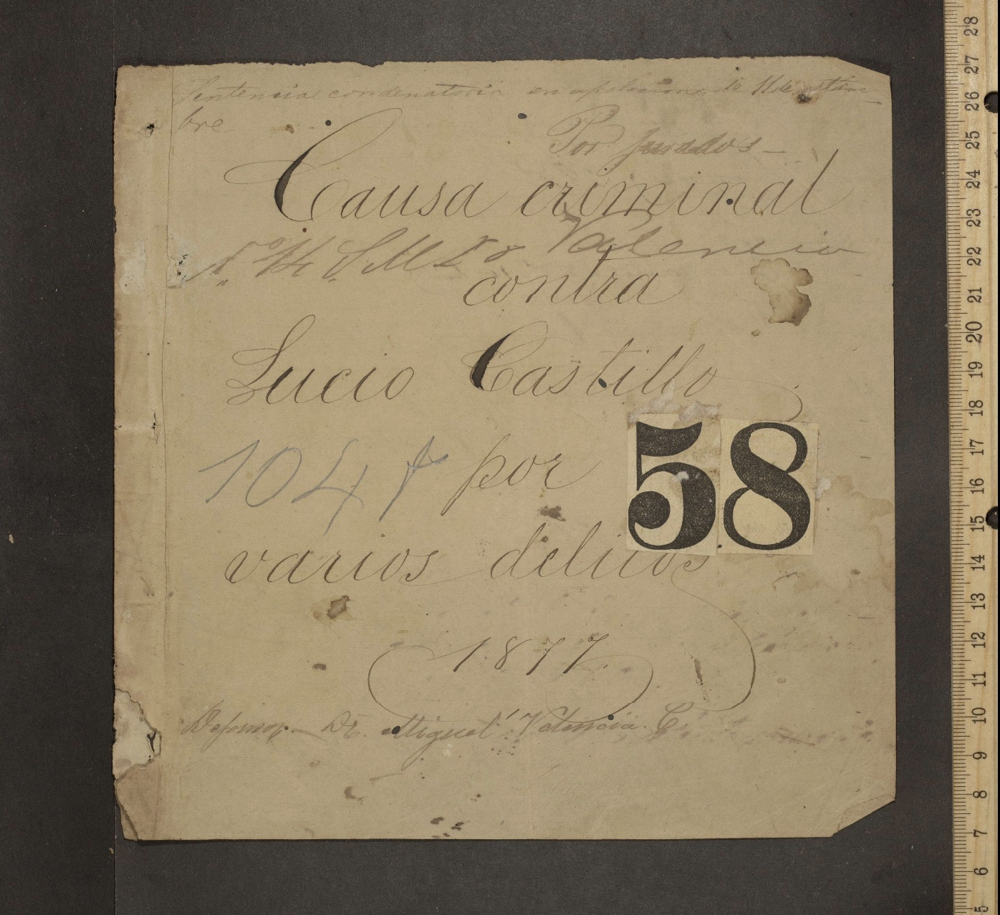

LeCO se construyó con eXtreme Design (XD): desarrollo colaborativo, incremental y dirigido por Competency Questions, partiendo de un caso documental controlado — el acta de cab-001-002 sobre Juan de Pineda (1547) — antes de escalar al resto del corpus.
Toda la información — ontología, corpus, pipeline, perfiles SHACL y consultas — está disponible en el repositorio del proyecto en GitHub.
eXtreme Design (XD) es un método colaborativo, incremental, iterativo, modular y test-driven para diseño ontológico basado en patrones: divide el problema en pequeños requisitos, los expresa como historias y Competency Questions, busca soluciones de diseño reutilizables, produce módulos, los prueba y los reintegra continuamente. LeCO adaptó sus 12 tasks originales en cinco fases; cada una se documenta abajo.
Task XD 1 — Get into the project context. Lectura del problema historiográfico, cultura jurisdiccional, legal pluralism y arquitectura documental. Premisa decisiva: la documentación jurídica de Antiguo Régimen no debe leerse como un sistema moderno de reglas homogéneas — justicia, autoridad, doctrina, costumbre y prácticas locales podían concurrir en una misma actuación.
Esto llevó a una arquitectura epistemológica de tres capas: 1) catalogación/archivo (código de referencia, repositorio, fecha — nunca mezclada con inferencias jurídicas), 2) texto/evidencia (transcripción TEI, segmentos, menciones — anotar no reescribe la fuente) y 3) interpretación histórico-semántica (roles, relaciones, jurisdicción, provenance — toda inferencia debe señalar base y evidencia).
Tasks 2-3 — Collect requirement stories / Select a story. El corpus piloto se organizó alrededor de la colección de cabildos: 20 unidades documentales, 19 con transcripción utilizable, cada una como paquete de cuatro artefactos (metadata.json, tei.xml, annotations.csv, relations.csv).
Se priorizó cab-001-002 como primera story de modelado — un oficial del Cabildo es sancionado, apela ante la Real Audiencia, invoca su nombramiento como Procurador y queda sujeto a investigación. El caso obligó a distinguir persona/oficio/rol, autoridad/jurisdicción, acto/documento, argumento/norma y evidencia/inferencia, antes de escalar al resto del corpus.
Tasks 4-5 — Transform story into CQs / Select a CQ. Las necesidades historiográficas se convirtieron en 37 Competency Questions, contrato de modelado y de prueba a la vez: una decisión ontológica se justificaba si permitía responder preguntas necesarias para la investigación.
Un subconjunto de 12 CQs núcleo (C01–C12) se materializó primero sobre Pineda y se convirtió en suite mínima de regresión — ver la sección "Competency Questions" más abajo para el detalle completo con SPARQL.
Tasks 6-8 — Match CQ to GUCs / Select patterns / Reuse and integrate. Reutilización directa de RiC-O (Records/RecordParts, Rule, CorporateBody, PositionHoldingRelation), alineación con CIDOC CRM (personas, eventos, lugares), y reutilización directa de SKOS (vocabularios controlados), PROV-O (provenance) y OWL-Time (contexto temporal).
Patrones de diseño propios: participación n-aria y rol procesal contextual (no se afirma que alguien "es apelante" en general — el rol queda limitado al acto); ocupación temporal de oficios vía rico:PositionHoldingRelation; jurisdicción como entidad jurídica separada de Place. Casos de doble naturaleza (Auto = acto + tipo documental; Procurador = oficio + rol procesal; Repartimiento = acto + arreglo jurídico) se resolvieron sin colapsar la distinción.
Tasks 9-12 — Test and fix / Release module / Integrate / Release new version. SHACL se incorporó como complemento de OWL: OWL expresa la semántica bajo mundo abierto, SHACL implementa perfiles ejecutables de integridad y calidad — el equivalente de unit/regression testing para el grafo de datos.
Evolución de versiones: v0.1 (esqueleto conceptual) → v0.2 (consolidación, 9 gaps identificados) → v0.3 gap-resolved (37 CQs cubiertas) → iteraciones 0.3.x (ContextualInferenceBasis, normalización de oficios, perfiles SHACL). La primera validación batch produjo 336 violaciones; tras refinar CORE y curar QUALITY quedaron 163 warnings documentados como deuda aceptada, no como bloqueo.
Las propuestas automáticas nunca sustituyeron la validación del dominio. Cuando una relación no podía resolverse de forma inequívoca, el pipeline conservó un warning o abrió una cola de revisión en lugar de convertir una conjetura en un triple.
El corpus no se modeló probando esquemas sobre los 19 documentos a la vez. Se tomó uno solo — cab-001-002 — y se modeló manualmente de punta a punta: separación de metadatos, segmentación jurídico-discursiva, taxonomía de entidades y actos, anotación TEI, distinciones ontológicas (persona/oficio/rol, explícito/inferido, jurisdicción) y mapeo final a RDF. Ese modelado manual, ya probado y validado, fue después la base que se le dio a un LLM para asistir el modelado del resto del corpus con el mismo criterio.
Por eso este documento no aparece solo como un caso más: cada paso del pipeline en la sección siguiente incluye, marcado como "Ejemplo — cab-001-002", el fragmento real de este proceso manual — el mismo patrón que después se replicó, asistido por IA, en los otros 18 documentos.
| Título | Acta de Cabildo sobre castigo de Juan de Pineda y nombramiento de Pedro Vasquez |
| Fecha | 1547 (2 de septiembre de 1547) |
| Código de referencia | co-ahrb-cab-001-d002 |
| Identificador local | cab-001-002 |
| Repositorio | Archivo Histórico Regional de Boyacá |
| Localización | Tunja, Colombia |
| Material | Manuscrito, original — actualmente sin copia digital disponible |
Cada documento se organiza como un paquete de cuatro artefactos: metadata.json (código de referencia, repositorio, fecha, notas de acceso y descripción archivística), tei.xml, annotations.csv y relations.csv. Un quinto elemento transversal —el vocabulario/ontología— integra y normaliza relaciones a través de todo el corpus.
Regla metodológica: los campos catalográficos verificados nunca se mezclan con las inferencias jurídicas. Si el catálogo dice "fecha desconocida", eso no se completa mediante suposición.
Artefactos: data/documents/<id>/metadata.json + tei.xmlDe Zasqua se recupera esto como metadato archivístico — no como algo que la IA tenga que inferir:
| Tipo de unidad | Unidad documental |
| Título | Acta de Cabildo sobre castigo de Juan de Pineda y nombramiento de Pedro Vasquez |
| Fecha | 1547 (2 de septiembre de 1547) |
| Código de referencia | co-ahrb-cab-001-d002 |
| Identificador local | cab-001-002 |
| Repositorio | Archivo Histórico Regional de Boyacá |
| Localización | Tunja, Colombia |
| Extensión | 005–006 |
| Idioma | español |
| Material | Manuscrito, original |
| Instrumento de consulta | Índices del Archivo Histórico Regional de Boyacá, Libros de Cabildos |
| Personas/entidades | Pedro Vázquez, Cabildo de Tunja, Juan de Pineda |
| Lugares | Perú, Tunja |
Zasqua publica sus metadatos usando METS — una pista para un mapeo futuro de esos metadatos hacia RiC-O.
El texto inline identifica menciones y evidencia — personas, instituciones, lugares, oficios, actos y términos — mientras las entidades, eventos y relaciones complejas viven preferentemente en standOff. Esta separación permite enriquecer semánticamente el documento sin alterar la transcripción.
Los 20 TEI originales viven en data/documents/<id>/tei.xml y nunca se sobrescriben: toda corrección posterior se aplica en capas derivadas y regenerables, nunca sobre la fuente.
No se tokeniza palabra por palabra. Primero se hace una segmentación jurídico-discursiva: el documento tiene seis unidades, cada una con su propio contenido jurídico.
| Seg. | Texto | Elementos |
|---|---|---|
| S1 | "El día 2 de septiembre 1547, se reunierón los señores Justicia y Regimiento…" | fecha; institución/cuerpo; reunión; finalidad; Real Servicio |
| S2 | "En la reunión informó el Alcalde Ordinario, para viajar a las provincias de Perú." | actor; oficio; acción; desplazamiento; territorio |
| S3 | "Los señores capitulares, acordaron ponerlo preso y encargar en su remplazo a don Pedro Vasquez." | actor colectivo; decisión; sanción; nombramiento/reemplazo; nuevo funcionario |
| S4 | "El Alcalde Juan de Pineda compareció ante la Real Audencia para apelar la sanción…" | Pineda → parte/apelante → Audiencia → apelación → sanción |
| S5 | "argumento que se encontraba gestionado lo de su nombramiento como Procurador." | actor; argumento; nombramiento; oficio de procurador; justificación de conducta |
| S6 | "Se ordenó investigar las acciones y comportamiento del señor Pineda…" | acto procesal; investigación; objeto investigado; autoridad; eventual decisión |
Esto ya muestra algo importante: el documento no es una sola acción jurídica — es una secuencia de actos.
enrich_tei.py combina TEI + annotations.csv + relations.csv + metadata.json y genera una capa derivada con standOff formalizado: entidades reutilizables, eventos y relaciones. Curadurías sucesivas —triage QUALITY, auditoría de participantes, auditoría de relaciones legales— se aplican sobre esa capa, nunca editando RDF a mano.
El resultado es build/tei_legal_curated/<id>.xml: la capa TEI-LeCO definitiva y vigente del pipeline.
Antes de anotar, se prueba la taxonomía sobre el propio texto — no toda expresión relevante es una entidad nombrada: "apelar", "investigar" o "poner preso" son actos jurídicos, no personas ni instituciones.
| Expresión | Categoría |
|---|---|
| Justicia y Regimiento | institución/cuerpo |
| Alcalde Ordinario | oficio/rol |
| señores capitulares | actor colectivo/rol institucional |
| Pedro Vasquez / Juan de Pineda | persona |
| Real Audiencia | institución/jurisdicción |
| Procurador | oficio/rol |
| Perú / Tunja | lugar/territorio |
| ponerlo preso | acto sancionatorio |
| encargar en su reemplazo | acto de sustitución/nombramiento |
| compareció / apelar / investigar | acto procesal |
| deber de Alcalde Ordinario | obligación/deber normativo |
| Real Servicio | concepto político-jurídico |
Convención de anotación — primero el criterio, no todavía el tag TEI definitivo:
<p>
El día <date when="1547-09-02">2 de septiembre 1547</date>,
se reunieron los <rs type="institutional_body" ref="#justicia_regimiento">
señores Justicia y Regimiento</rs>,
con el fin de tratar los asuntos del <term type="political_concept">Real Servicio</term>.
</p>
<p>
Los <rs type="institutional_role" ref="#capitulares">señores capitulares</rs>
acordaron <rs type="legal_act" subtype="sanction">ponerlo preso</rs>
y <rs type="legal_act" subtype="replacement">encargar en su reemplazo</rs>
a <persName ref="#pedro_vasquez">don Pedro Vasquez</persName>.
</p>
Especialmente interesante: "Alcalde Ordinario". No es Alcalde Ordinario = persona. Son dos cosas: Juan de Pineda → persona; Alcalde Ordinario → oficio/rol; y una relación entre ambas — Juan de Pineda → ocupa/desempeña → Alcalde Ordinario. Esto permite modelar que una persona ocupa un oficio en un momento determinado: Juan de Pineda → Alcalde Ordinario → 1547.
Precisamente este documento sirvió para probar estos tags — no se asumieron como definitivos desde el inicio.
tei_to_rdf.py detecta dos modos automáticamente: legacy-inline extrae solo relaciones seguras de TEI tempranos sin standOff; mapping-profile aprovecha el standOff y el mapping formal (mapping/tei_to_leco.yaml) para generar instancias LeCO con provenance completa.
La identidad RDF no se basa en etiquetas como "Juan de Pineda" —que pueden cambiar por normalización ortográfica— sino en código documental + xml:id: https://w3id.org/leco/data/{reference_code}/{xml_id}.
El texto dice que Pineda "compareció ante la Real Audiencia para apelar la sanción" — nunca dice literalmente "parte" o "apelante". Que esté actuando como apelante es una interpretación histórica, no una extracción literal, y se marca distinto:
Juan de Pineda
→ textual role: Alcalde Ordinario (explícito, MayorOfficeType)
→ inferred procedural role: AppellantRole (inferido)
basis: InferredFromText
confidence: 0.75
evidence: cab-001-002_s004
Esa distinción — annotationBasis + confidenceScore + attestedIn — es exactamente lo que permite usar IA sin confundir extracción con interpretación.
El mismo criterio aplica a la relación entre instituciones: Cabildo y Real Audiencia no son "dos instituciones" sueltas — hay una relación jurisdiccional (una decisión del Cabildo es apelada ante la Real Audiencia). Esto es el RDF real generado para este documento (build/rdf_legal_curated/cab-001-002.ttl, 723 triples), no una maqueta conceptual:
data:person_..._s004_a002 # Juan de Pineda
a leco:Person, foaf:Person ;
rdfs:label "Juan de Pineda" ;
leco:holdsOffice data:migrated_..._s004_r001-office .
data:migrated_..._s004_r001-office
a leco:Office ;
leco:hasOfficeType leco:MayorOfficeType ;
leco:officeExistsIn data:catalog_org_002 . # Cabildo de Tunja
data:event_..._s004_a005 # "apelar"
a leco:Appeal ;
leco:appealsAgainst data:event_..._s003_a001 ; # "acordaron" (sanción)
leco:beforeAuthority data:org_..._s004_a004 ; # Real Audencia
leco:withinJurisdiction data:jurisdiction_audiencia_01 ;
leco:hasParticipation data:migrated_..._s004_r002 .
data:migrated_..._s004_r002
a leco:Participation ;
leco:participationActor data:person_..._s004_a002 ;
leco:participationRole leco:AppellantRole ;
leco:participationInAct data:event_..._s004_a005 .
data:event_..._s003_a001 # "acordaron"
a leco:LegalDecision ;
leco:decidedBy data:catalog_org_002 ; # Cabildo de Tunja
leco:withinJurisdiction data:jurisdiction_cabildo .
data:catalog_org_002
a leco:CorporateBody ;
rdfs:label "Cabildo de Tunja" ;
leco:exercisesJurisdiction data:jurisdiction_cabildo .
Dato honesto, no maquillado: el evento de "nombramiento" de Pineda como Procurador (event_..._s004_a006) sí tiene hasParticipant, pero no tiene appointsPerson ni appointsToOffice resueltos — el texto no lo deja inequívoco, y el pipeline no lo inventa. Es exactamente uno de los 163 warnings QUALITY documentados; se puede ver el reporte real de este mismo documento en la pestaña "05 SHACL".
Tres perfiles ejecutables, detallados en la sección "Perfiles SHACL" más abajo: CORE valida integridad estructural real y debe pasar siempre; QUALITY reporta como advertencia (no error) la incompletitud históricamente legítima; STRICT exige completitud fuerte, reservado para gold standards y fixtures curados.
SHACL se incorporó como complemento de OWL: OWL expresa la semántica bajo mundo abierto, SHACL implementa perfiles ejecutables de integridad y calidad — el equivalente de unit/regression testing para el grafo de datos.
Reporte real (build/shacl_reports_core_legal/cab-001-002.ttl):
[] a sh:ValidationReport ;
sh:conforms true .
CORE conforme, cero resultados — ni una sola violación estructural en las 723 triples de este documento.
El perfil QUALITY, en cambio, sí reporta advertencias reales (build/shacl_reports_quality_legal/cab-001-002.ttl) — exactamente los mismos huecos que ya se vieron sin maquillar en la pestaña "04 RDF":
| resultPath | Casos | Mensaje |
|---|---|---|
leco:withinJurisdiction | 6 | No se ha identificado una jurisdicción para este acto. |
leco:appointsPerson | 1 | No se ha identificado la persona nombrada (nombramiento de Procurador, s004_a006). |
leco:appointsToOffice | 1 | No se ha identificado el oficio al que se realiza el nombramiento. |
8 warnings, severidad sh:Warning, conforms sigue siendo true: el gold standard es CORE-válido y al mismo tiempo documenta su propia incompletitud, sin necesidad de ser "perfecto" para ser útil.
OWL-RL materializa inferencias sobre corpus + ontología: 12.344 → 23.945 triples. Una regla conservadora deriva withinJurisdiction solo cuando el acto tiene una autoridad conocida que ejerce exactamente una jurisdicción compatible; cuando existen varias autoridades o jurisdicciones candidatas, no se infiere nada.
Toda inferencia queda marcada con ContextualInferenceBasis y ProposedAnnotation, evitando presentarla como evidencia textual explícita — nunca se confunde lo que el texto dice con lo que el grafo dedujo.
Este documento por sí solo dispara 11 inferencias reales (extraídas directamente del RDF, con dcterms:identifier, confidenceScore y validationNote propios de cada una): 2 vía D001, 7 vía D002, 2 vía D004. Algunas:
| Regla | Triple derivado | Conf. |
|---|---|---|
| D001 | event_..._s003_a001 (acordaron) withinJurisdiction jurisdiction_cabildo | 0.75 |
| D001 | event_..._s004_a005 (apelar) withinJurisdiction jurisdiction_audiencia_01 | 0.75 |
| D002 | event_..._s004_a005 (apelar) hasParticipant Real Audencia | 0.95 |
| D004 | uso de "Real Servicio" conceptUseJurisdiction jurisdiction_cabildo | 0.90 |
D001 razona: "acordaron" fue decidido por el Cabildo de Tunja, y el Cabildo ejerce jurisdicción territorial sobre Tunja → el acto ocurre dentro de esa jurisdicción. Es exactamente el mismo razonamiento que un historiador haría a mano — solo que aquí queda trazable, con confianza explícita y sin presentarse nunca como si el texto lo dijera literalmente.
build_corpus_graph.py genera dos artefactos complementarios: un grafo unión para consultas sencillas (corpus_graph.ttl) y un RDF Dataset con un named graph por documento para conservar procedencia (corpus_dataset.trig). Un manifiesto (corpus_manifest.json) registra hashes SHA-256, triples, deduplicación y solapamientos para reproducibilidad exacta.
Cross-document local subjects = 0 confirma que no hubo colisiones accidentales de URI entre documentos — pero no significa que las entidades históricamente idénticas ya estén reconciliadas. "Cabildo de Tunja" puede existir todavía como recursos distintos entre documentos; la reconciliación interdocumental es una fase futura.
Encadenando las relaciones de S1–S6, cab-001-002 ya arma prácticamente un pequeño knowledge graph por sí solo:
Este es el patrón concreto — no solo la regla abstracta "modelar jurisdicción y participación" — que se usó como referencia al escalar al resto del corpus con asistencia de LLM.
Su huella real dentro del knowledge graph conjunto, tomada directamente de corpus_manifest.json:
| Named graph | https://w3id.org/leco/graph/cab-001-002 |
| Triples aportadas | 723 (de 11.012 en el grafo base) |
| SHA-256 de origen | cd75c4c3…40a035a1 |
| Sujetos locales compartidos con otros documentos | 0 (sin colisión de URI) |
Ese named graph es justamente lo que permite decir "esta afirmación viene de cab-001-002" incluso después de fusionar los 19 documentos en un solo grafo de consulta.
LeCO Explorer (Streamlit) ofrece consulta guiada sin necesidad de escribir SPARQL, editor SPARQL con consultas guardadas, exploración de URIs con buscador por nombre, y una pestaña de deuda QUALITY. El SPARQL generado por la consulta guiada siempre queda visible: un investigador puede usar formularios sin conocer la sintaxis, pero la consulta formal nunca se oculta.
El selector Afirmado/Razonado permite comparar qué resultados están materializados directamente y cuáles solo aparecen tras el cierre OWL-RL.
La consulta C01 (personas en actos), filtrada a este documento:
PREFIX leco: <https://w3id.org/leco/ontology#>
PREFIX rico: <https://www.ica.org/standards/RiC/ontology#>
SELECT DISTINCT ?person ?label ?act WHERE {
FILTER(STRSTARTS(STR(?act), "https://w3id.org/leco/data/co-ahrb-cab-001-d002/"))
{ ?act a leco:JurisdictionalAct ; leco:hasParticipant ?person . }
UNION
{ ?participation a leco:Participation ;
leco:participationActor ?person ;
leco:participationInAct ?act . }
?person a rico:Person .
OPTIONAL { ?person rdfs:label ?label }
}
ORDER BY ?person ?act
Sobre el grafo Afirmado (sin razonar): 0 filas — ningún acto tiene asertado directamente a leco:JurisdictionalAct, solo sus subclases (Appeal, LegalDecision…). Sobre el grafo Razonado: 8 filas reales, entre ellas:
| Persona | Acto |
|---|---|
| Pedro Vasquez | event_..._s003_a002 |
| Juan de Pineda | event_..._s003_a002 |
| Juan de Pineda | event_..._s004_a003 (compareció) |
| Juan de Pineda | event_..._s004_a005 (apelar) |
| Juan de Pineda | event_..._s004_a006 (nombramiento) |
Este es justo el caso que motivó agregar el aviso Afirmado/Razonado a LeCO Explorer: sin él, alguien podría concluir —erróneamente— que este documento "no tiene actos con participantes".
Las CQs son contrato de modelado y de prueba a la vez. LeCO documenta 37 en total; las 12 núcleo (C01–C12) se materializaron primero sobre el gold standard cab-001-002 y se convirtieron en tests/test_core_cqs.py, la suite mínima de regresión. Cada una abajo incluye la consulta SPARQL real usada como prueba (queries/core/).
Gold standard esperado (cab-001-002): Pineda en apelación y actuaciones relacionadas.
PREFIX leco: <https://w3id.org/leco/ontology#>
PREFIX rico: <https://www.ica.org/standards/RiC/ontology#>
SELECT DISTINCT ?person ?act WHERE {
{
?act a leco:JurisdictionalAct ; leco:hasParticipant ?person .
} UNION {
?participation a leco:Participation ;
leco:participationActor ?person ;
leco:participationInAct ?act .
}
?person a rico:Person .
}
ORDER BY ?person ?actGold standard esperado (cab-001-002): Pineda → oficio de alcalde → 1547.
PREFIX leco: <https://w3id.org/leco/ontology#>
PREFIX rico: <https://www.ica.org/standards/RiC/ontology#>
SELECT DISTINCT ?person ?office ?officeType ?date WHERE {
?holding a rico:PositionHoldingRelation ;
rico:relationHasSource ?person ;
rico:relationHasTarget ?office ;
rico:relationHasDate ?date .
?office a leco:Office ; leco:hasOfficeType ?officeType .
}
ORDER BY ?person ?dateGold standard esperado (cab-001-002): Pineda → AppellantRole → apelación.
PREFIX leco: <https://w3id.org/leco/ontology#>
SELECT DISTINCT ?person ?role ?act WHERE {
?participation a leco:Participation ;
leco:participationActor ?person ;
leco:participationRole ?role ;
leco:participationInAct ?act .
}
ORDER BY ?person ?actGold standard esperado (cab-001-002): Cabildo / Real Audiencia según la actuación.
PREFIX leco: <https://w3id.org/leco/ontology#>
PREFIX rico: <https://www.ica.org/standards/RiC/ontology#>
SELECT DISTINCT ?act ?institution ?relation WHERE {
?institution a rico:CorporateBody .
{
?act leco:beforeAuthority ?institution .
BIND(leco:beforeAuthority AS ?relation)
} UNION {
?act leco:decidedBy ?institution .
BIND(leco:decidedBy AS ?relation)
} UNION {
?act leco:hasParticipant ?institution .
BIND(leco:hasParticipant AS ?relation)
}
}
ORDER BY ?act ?institutionGold standard esperado (cab-001-002): Jurisdicción local y/o de revisión según acto/autoridad.
PREFIX leco: <https://w3id.org/leco/ontology#>
SELECT DISTINCT ?authority ?act ?jurisdiction ?place WHERE {
OPTIONAL { ?authority leco:exercisesJurisdiction ?jurisdiction . }
OPTIONAL { ?act leco:withinJurisdiction ?jurisdiction . }
OPTIONAL { ?jurisdiction leco:territorialScope ?place . }
FILTER(BOUND(?authority) || BOUND(?act))
}
ORDER BY ?jurisdiction ?authority ?actGold standard esperado (cab-001-002): Apelación → sanción/decisión previa.
PREFIX leco: <https://w3id.org/leco/ontology#>
SELECT DISTINCT ?appeal ?decision ?authority WHERE {
?appeal a leco:Appeal ;
leco:appealsAgainst ?decision ;
leco:beforeAuthority ?authority .
}
ORDER BY ?appealGold standard esperado (cab-001-002): Regla/deber cuando existe evidencia suficiente.
PREFIX leco: <https://w3id.org/leco/ontology#>
SELECT DISTINCT ?context ?rule ?mode WHERE {
{
?context leco:invokesRule ?rule . BIND("invokes" AS ?mode)
} UNION {
?context leco:citesRule ?rule . BIND("cites" AS ?mode)
} UNION {
?context leco:appliesRule ?rule . BIND("applies" AS ?mode)
} UNION {
?context leco:interpretsRule ?rule . BIND("interprets" AS ?mode)
} UNION {
?context leco:argumentInvokesRule ?rule . BIND("argument" AS ?mode)
}
}
ORDER BY ?context ?ruleGold standard esperado (cab-001-002): Real Servicio.
PREFIX leco: <https://w3id.org/leco/ontology#>
PREFIX rico: <https://www.ica.org/standards/RiC/ontology#>
SELECT DISTINCT ?document ?concept ?use WHERE {
?use a leco:HistoricalConceptUse ;
leco:conceptUsed ?concept ;
leco:attestedIn ?segment .
?segment rico:isDirectConstituentOf+ ?document .
}
ORDER BY ?document ?conceptGold standard esperado (cab-001-002): S3 sanción; S4 apelación; etc.
PREFIX leco: <https://w3id.org/leco/ontology#>
PREFIX rico: <https://www.ica.org/standards/RiC/ontology#>
SELECT DISTINCT ?document ?segment ?act WHERE {
?segment a leco:LegalDocumentPart ;
rico:isDirectConstituentOf ?document ;
leco:documentsAct ?act .
}
ORDER BY ?document ?segmentGold standard esperado (cab-001-002): Segmento + basis + provenance.
PREFIX leco: <https://w3id.org/leco/ontology#>
PREFIX prov: <http://www.w3.org/ns/prov#>
SELECT DISTINCT ?annotation ?target ?body ?basis ?evidence ?activity WHERE {
?annotation a leco:SemanticAnnotation ;
leco:annotationTarget ?target ;
leco:annotationBody ?body ;
leco:annotationBasis ?basis ;
leco:attestedIn ?evidence ;
prov:wasGeneratedBy ?activity .
}
ORDER BY ?annotationGold standard esperado (cab-001-002): Cabildo → apelación → Real Audiencia.
PREFIX leco: <https://w3id.org/leco/ontology#>
SELECT DISTINCT ?decision ?originalAuthority ?appeal ?reviewAuthority WHERE {
?decision a leco:LegalDecision ;
leco:decidedBy ?originalAuthority .
?appeal a leco:Appeal ;
leco:appealsAgainst ?decision ;
leco:beforeAuthority ?reviewAuthority .
}
ORDER BY ?decision ?appealGold standard esperado (cab-001-002): Argumento por incumplimiento del deber / regla.
PREFIX leco: <https://w3id.org/leco/ontology#>
SELECT DISTINCT ?decision ?argument ?rule WHERE {
?decision leco:hasLegalArgument ?argument .
?argument a leco:LegalArgument ;
leco:argumentInvokesRule ?rule .
}
ORDER BY ?decision ?argumentEl snapshot v0.3 gap-resolved documenta 88 OWL classes, 61 object properties y 6 datatype properties. El diagrama despliega las 16 clases núcleo en torno a JurisdictionalAct — la clase central del modelo — más Agent y Place, reutilizadas de CIDOC CRM; la tabla desplegable debajo detalla su definición y relaciones.
El centro (ocre) es JurisdictionalAct, la clase que ancla toda actuación jurisdiccional. Las ocho cajas oscuras que lo rodean son las clases con las que se relaciona directamente; cada flecha lleva el nombre de la propiedad y apunta en la dirección real del predicado. El siguiente anillo (gris) son clases secundarias que cuelgan de su clase primaria más cercana — Office de Agent, NormativeRule de LegalArgument, Appeal de LegalDecision — y OfficeType, un anillo más afuera, cuelga a su vez de Office. SemanticAnnotation, aparte en la esquina inferior, no encaja en ningún anillo: es la capa de provenance que puede anotar cualquier afirmación del grafo, por eso se conecta con líneas punteadas en vez de una flecha de propiedad.
| Clase | Definición | subClassOf |
|---|---|---|
leco:JurisdictionalActActo jurisdiccional |
Actividad jurisdiccional central del modelo — toda actuación se ancla aquí. | E7_Activity |
leco:JurisdictionJurisdicción |
Separada deliberadamente de Place: territorial, personal y/o material. | — |
leco:ParticipationParticipación procesal o jurisdiccional |
Patrón n-ario: contextualiza actor + rol + acto sin afirmar el rol de forma general. | Association |
leco:LegalDecisionDecisión jurídica |
Subclase de JurisdictionalAct. | JurisdictionalAct |
leco:AppealApelación |
Subclase de ProceduralAct; enlaza con la decisión apelada. | ProceduralAct |
leco:OfficeOficio o cargo |
Posición institucional independiente de quién la ocupa. | Position |
leco:OfficeTypeTipo de oficio |
Vocabulario SKOS controlado de tipos de oficio normalizados. | Type |
leco:LegalArgumentArgumento jurídico |
Enlaza con NormativeRule mediante argumentInvokesRule. | E28_Conceptual_Object |
leco:NormativeRuleRegla normativa |
Regla del orden normativo colonial, escrita o no escrita. | Rule |
leco:LegalDocumentDocumento jurídico |
Documento con función jurídica, normativa, administrativa o procesal. | E31_Document |
leco:HistoricalLegalConceptConcepto jurídico histórico |
El concepto en sí — no se confunde con su uso textual. | Concept |
leco:HistoricalConceptUseUso histórico de concepto |
Ocurrencia contextualizada de un concepto: forma léxica, documento, tiempo, jurisdicción. | Entity |
leco:HistoricalCategoryAssignmentAtribución de categoría histórica |
Atribución de categoría histórica a un actor, con evidencia y atribución preservadas. | E13_Attribute_Assignment |
leco:RepresentationRelationRelación de representación |
Principal/representante resultante de un GrantOfPower. | LegalRelation |
leco:LegalArrangementArreglo o institución jurídica |
Configuración jurídica resultante de un acto (repartimiento, encomienda) sin reducirse al evento. | — |
leco:SemanticAnnotationAnotación semántica |
Nodo de provenance: objetivo, cuerpo, base, validación y evidencia de cada afirmación. | Entity |
| Propiedad | Definición | Domain → Range |
|---|---|---|
leco:hasParticipant |
Atajo amplio; para roles contextualizados se recomienda Participation. | JurisdictionalAct → Agent |
leco:participationActor |
Actor de una Participation. | Participation → Agent |
leco:participationRole |
Rol procesal contextual de una Participation. | Participation → ProceduralRole |
leco:participationInAct |
Acto al que pertenece una Participation. | Participation → JurisdictionalAct |
leco:withinJurisdiction |
Jurisdicción en la que se sitúa un acto. | JurisdictionalAct → Jurisdiction |
leco:exercisesJurisdiction |
Jurisdicción que ejerce un agente. | Agent → Jurisdiction |
leco:jurisdictionExercisedBy |
Inversa de exercisesJurisdiction. | Jurisdiction → Agent |
leco:decidedBy |
Autoridad que decide una LegalDecision. | LegalDecision → Agent |
leco:appealsAgainst |
Decisión apelada por un Appeal. | Appeal → LegalDecision |
leco:beforeAuthority |
Autoridad ante la que se presenta un acto procesal. | ProceduralAct → Agent |
leco:hasOfficeType |
Tipo controlado de un Office. | Office → OfficeType |
leco:officeExistsIn |
Institución en la que existe un Office. | Office → Group |
leco:holdsOffice |
Persona que ocupa un Office. | Person → Office |
leco:conceptUsed |
Concepto histórico referido por un HistoricalConceptUse. | HistoricalConceptUse → HistoricalLegalConcept |
leco:hasLegalArgument |
Argumento asociado a un acto. | JurisdictionalAct → LegalArgument |
leco:argumentInvokesRule |
Norma invocada por un LegalArgument. | LegalArgument → NormativeRule |
leco:sanctions |
Actor sancionado por un Sanction. | Sanction → Agent |
leco:appointsPerson |
Persona nombrada por un Appointment. | Appointment → Person |
leco:appointsToOffice |
Oficio al que se nombra. | Appointment → Office |
leco:createsRepresentation |
Relación de representación creada por un GrantOfPower. | GrantOfPower → RepresentationRelation |
leco:resultsInLegalArrangement |
Arreglo jurídico resultante de un acto. | JurisdictionalAct → LegalArrangement |
leco:attestedIn |
Evidencia documental que sustenta una afirmación (dominio amplio). | — → — |
leco:documentsAct |
Acto documentado por un segmento (dominio amplio). | — → JurisdictionalAct |
documentos con transcripción procesable. cab-001-058 se preserva en el inventario sin inventar contenido.
en el grafo unión (corpus_graph.ttl), integrados en 19 named graphs (corpus_dataset.trig), 0 deduplicados.
documentos conformes individual y globalmente. 0 violaciones estructurales, 0 warnings de conversión.
triples tras materializar OWL-RL sobre corpus + ontología (desde 12.344 antes de razonar).
| Momento | Resultado | Lectura |
|---|---|---|
| Batch inicial | 336 violaciones | El perfil era demasiado estricto y mezclaba integridad con completitud. |
| CORE refinado | 19/19 conformes | La estructura RDF del corpus es válida. |
| QUALITY base | 309 warnings | Radiografía inicial de incompletitud semántica. |
| Tras curaduría de participantes | 165 warnings | Participación explícita/contextual recuperable materializada. |
| Estado actual | 163 warnings | Se aceptan como calidad/semántica pendiente, no como bloqueo — no se fijó QUALITY = 0 como objetivo. |
Valida integridad estructural real: toda Participation debe declarar actor, rol y acto; toda anotación semántica debe declarar objetivo, cuerpo, base y estado de validación; todo concepto debe pertenecer a su scheme SKOS controlado; todo confidenceScore debe caer en [0,1].
No exige que la fuente esté completa — solo que lo que sí se afirma esté bien formado. La ausencia de una autoridad o jurisdicción en un acto no es, por sí sola, un error CORE.
Estado actual: 19/19 documentos conformes · validación global conformeReporta como advertencia, no como error, la ausencia de relaciones deseables que la fuente no siempre expresa: withinJurisdiction, decidedBy, sanctions, un participante identificado, appealsAgainst, conceptUseTime.
Cada warning se conecta con su focus node, segmento TEI y texto de evidencia mediante quality_triage.py. La investigadora audita y decide caso por caso; nunca se agrega una relación solo para eliminar una advertencia.
Exige relaciones contextuales fuertes que no deben imponerse a todas las fuentes — pensado para el gold standard y fixtures curados, no para el corpus general.
El fixture de cab-001-002 (Juan de Pineda) se mantiene como caso STRICT y de regresión: cuando el pipeline automático produce algo menos completo que el fixture curado, esa divergencia se trata como señal de pérdida en el pipeline, nunca como razón para rebajar el estándar.
Artefactos: LeCO_shapes_strict.ttl · test_shacl.py · test_core_cqs.pypytest -q python scripts/tei_to_rdf.py build/tei_legal_curated --all \ --validate --shacl-profile core python scripts/build_corpus_graph.py \ --input-dir build/rdf_legal_curated \ --validate-core --reason streamlit run app/leco_query_app.py